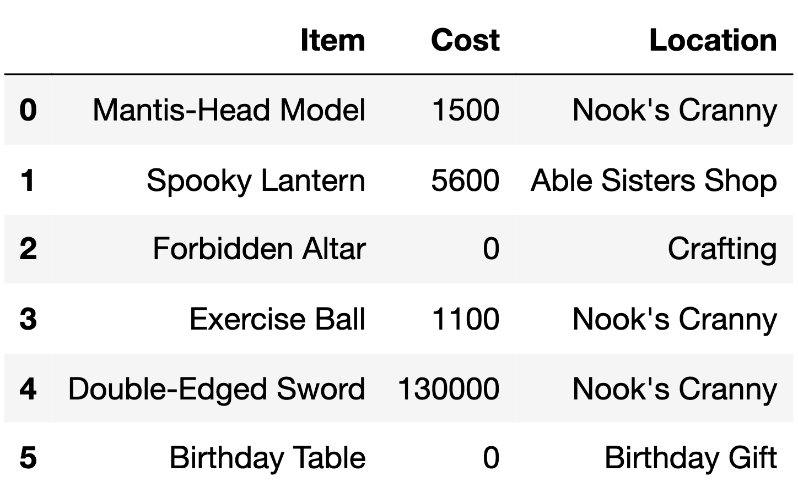
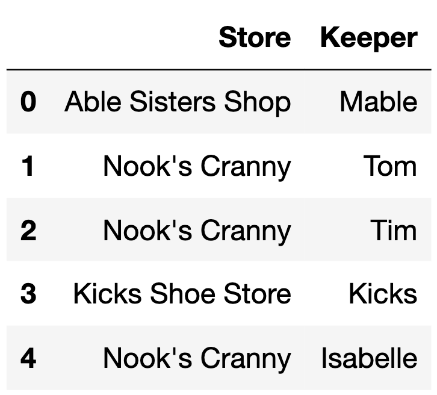
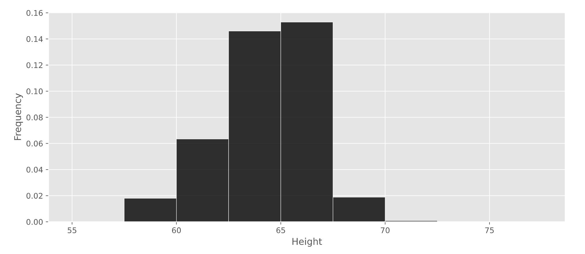

← return to practice.dsc10.com
This quiz was administered in-person. It was closed-book and
closed-note; students were not allowed to use the DSC
10 Reference Sheet. Students had 20 minutes to work on
the quiz.
This quiz covered Lectures 5-10 of the Fall 2023 offering of
DSC 10.
The DataFrame items describes various items available to
collect or purchase using bells, the currency used in the game
Animal Crossing: New Horizons.
For each item, we have:
"Item" (str): The name of the item."Cost" (int): The cost of the item in bells. Items that
cost 0 bells cannot be purchased and must be collected through other
means (such as crafting)."Location" (str): The store or action through which the
item can be obtained.The first 6 rows of items are below, though
items has more rows than are shown here.

Fill in the blanks so that count_1 and
count_2 both evaluate to the number of items in
items with a "Cost" of 0.
count_1 = items.groupby(__(a)__).__(b)__().get("Item").loc[__(c)__]
count_2 = items[__(d)__].shape[0]Answer:
a: "Cost"b: countc: 0d: items.get("Cost") == 0count_1:
items.groupby("Cost").count() creates one row per
distinct cost, with the cost as the index. Each remaining column holds
the number of items at that cost. We select the “Item” column with
.get("Item"), and .loc[0] pulls out the entry
whose index label is 0, which is the number of items costing 0
bells.
count_2:
We query the items DataFrame with the Boolean Series
items.get("Cost") == 0, to keep only the rows with a “Cost”
of 0 bells. Then, we do .shape[0] to count the number of
rows.
The average score on this problem was 81%.
The DataFrame keepers has 5 rows, each of which
represents a different shopkeeper in the Animal Crossing: New
Horizons universe.
keepers is shown below in its entirety.

How many rows are in the following DataFrame? Give your answer as an integer.
keepers.merge(items.take(np.arange(6)),
left_on="Store",
right_on="Location")Answer: 10
This code merges keepers (left) with
items.take(np.arange(6)) (right), which is the first 6 rows
of items. A row from keepers and a row from
items are combined whenever the "Store" value
in keepers is the same as the "Location" value
in items.
keepers has:
The first 6 rows of items have:
For each value that appears in both DataFrames, we multiply the number of matching rows in each, then add up the products:
“Kicks Shoe Store”, “Crafting” and “Birthday Gift” each appear in only one DataFrame, so they produce no rows.
1 + 9 = \boxed{10} \text{ rows}
The average score on this problem was 54%.
Which type of plot should we use to visualize the distribution of the
"Location" column in the items DataFrame?
Scatter plot
Line plot
Bar chart
Histogram
Answer: Bar chart
“Location” is a categorical variable, since each value is the name of a store or action. The distribution of a categorical variable is shown with a bar chart (one bar per category).
The average score on this problem was 74%.
Nintendo collected data on the heights of a sample of Animal Crossing: New Horizons players. A histogram of the heights in their sample is given below.

What percentage of players in Nintendo’s sample are at least 62.5 inches tall? Give your answer as an integer rounded to the nearest multiple of 5.
Answer: 80%
The total area of a density histogram is equal to 1. The area of each bar is the proportion of data within that bin. The percentage of players at least 62.5 inches tall is the total area of all bars at 62.5 inches and to the right.
For each bar,
\text{area} = \text{width} \times \text{height}.
One method is to find the area of all bars at 62.5 and to the right. However, we can use a shortcut: find the area of the bars to the left of 62.5 and subtract it from the total area of 1:
1 - (0.02 \times 2.5 + 0.06 \times 2.5) = 1 - 0.2 = 0.8 = 80\%.
Therefore, about 80% of players are at least 62.5 inches tall.
The average score on this problem was 73%.
Consider the function tom_nook, defined below. Recall
that if x is an integer, x % 2 is
0 if x is even and 1 if
x is odd.
def tom_nook(crossing):
bells = 0
for nook in np.arange(crossing):
if nook % 2 == 0:
bells = bells + 1
else:
bells = bells - 2
return bellsWhat value does tom_nook(8) evaluate to?
-6
-4
-2
0
2
4
6
Answer: -4
Calling tom_nook(8) passes 8 into
crossing, so the loop runs over np.arange(8),
which is 0, 1, 2, 3, 4, 5, 6, and 7. We initialize the variable
bells as 0.
nook % 2 is the remainder when nook is
divided by 2, so it equals 0 for even numbers and 1 for odd numbers. That means:
If nook is even, bells
goes up by 1. There are 4 evens (0, 2,
4, and 6), for a total of +4.
If nook is odd, bells goes
down by 2. There are 4 odds (1, 3,
5, and 7), for a total of 4 \times (-2) = -8.
0 + 4 - 8 = -4
Therefore, when we return bells at the end of the
function, it outputs a value of \boxed{-4}.
The average score on this problem was 79%.